Origens
A história dos animes
A história dos animes começa no início do século XX, quando artistas japoneses passaram a experimentar as primeiras técnicas de animação inspiradas nos trabalhos vindos dos Estados Unidos e da Europa. Os primeiros curtas, ainda mudos e em preto e branco, surgiram por volta de 1917 e serviram de base para uma linguagem que só se consolidaria décadas depois.
O grande salto ocorreu na década de 1960 com Osamu Tezuka, considerado o pai do mangá moderno, cuja obra Astro Boy inaugurou o formato televisivo semanal em 1963. A partir desse marco, o estilo característico — olhos grandes, cortes dinâmicos e narrativa serializada — passou a definir o que hoje reconhecemos como anime.
Nas décadas de 1980 e 1990 vieram obras que marcaram gerações: Akira, Dragon Ball, Neon Genesis Evangelion e os filmes do Studio Ghibli levaram a animação japonesa a um patamar artístico reconhecido internacionalmente, culminando no Oscar recebido por A Viagem de Chihiro em 2003.
Com a chegada do streaming, o anime se transformou em fenômeno global. Plataformas como Crunchyroll, Netflix e Prime Video passaram a licenciar simultaneamente com o Japão, e obras como Demon Slayer, Jujutsu Kaisen e Attack on Titan quebraram recordes de audiência no mundo inteiro, consolidando o anime como um dos pilares da cultura pop contemporânea.
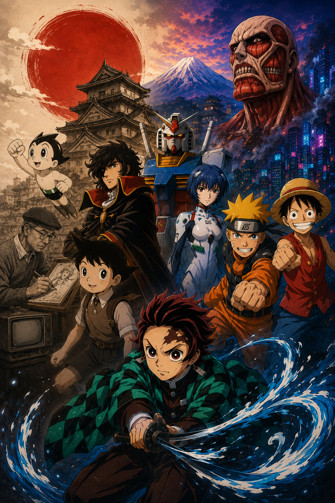
Estilos
Principais gêneros
O anime se divide em uma variedade enorme de gêneros que atendem a públicos e sensibilidades muito distintas. Conheça os principais estilos que definem o meio.
Shounen
Voltado ao público jovem masculino, marcado por batalhas, amizade e superação. Exemplos: Naruto, One Piece, Bleach.
Seinen
Para o público adulto, com narrativas maduras, psicológicas e violentas. Exemplos: Berserk, Monster, Vinland Saga.
Shoujo
Focado no público jovem feminino, com ênfase em romance, relacionamentos e emoções. Exemplos: Sailor Moon, Fruits Basket.
Josei
Voltado ao público adulto feminino, aborda dilemas reais, carreira e vida amorosa de forma realista. Exemplos: Nana, Chihayafuru.
Isekai
O protagonista é transportado para outro mundo, muitas vezes de fantasia ou videogame. Exemplos: Re:Zero, Mushoku Tensei.
Romance
A história gira em torno de relações amorosas, com foco emocional e desenvolvimento dos personagens. Exemplos: Toradora!, Horimiya.
Slice of Life
Retrata o cotidiano com delicadeza, humor e reflexões sobre a rotina. Exemplos: K-On!, Barakamon.
Ação
Combates intensos, coreografias impactantes e ritmo acelerado. Exemplos: Jujutsu Kaisen, Demon Slayer.
Fantasia
Mundos mágicos, criaturas míticas e aventuras épicas. Exemplos: Fairy Tail, Made in Abyss.
Ficção Científica
Explora tecnologia, futuro e questões filosóficas sobre humanidade. Exemplos: Steins;Gate, Ghost in the Shell.
Terror
Atmosferas sombrias, tensão psicológica e elementos sobrenaturais. Exemplos: Another, Higurashi.
Esporte
Foca em competições, treino e evolução de atletas. Exemplos: Haikyuu!!, Kuroko no Basket.
Clássicos e modernos
Animes famosos
Obras que marcaram épocas, redefiniram gêneros e ajudaram a construir a identidade do anime como fenômeno mundial.
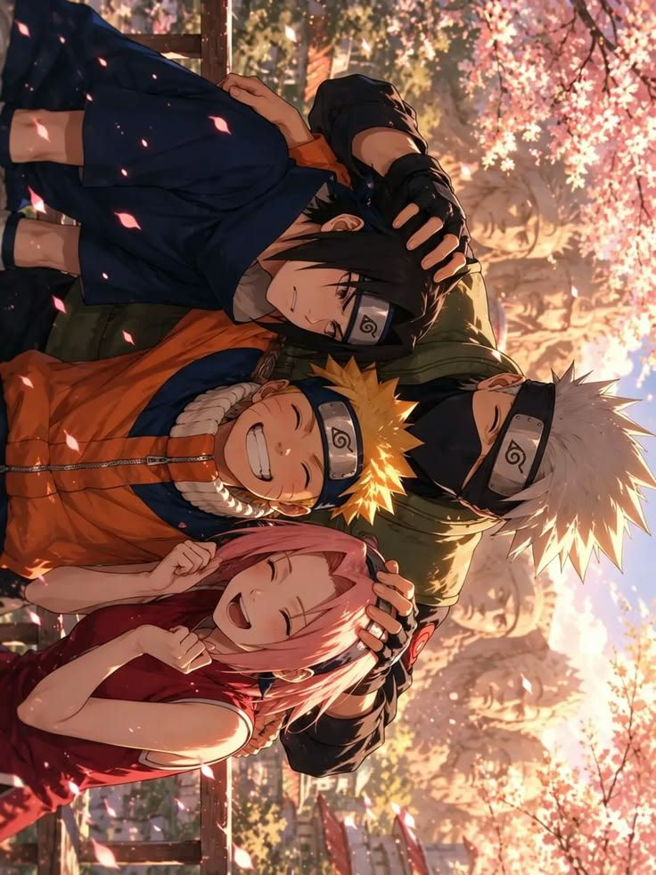
Naruto
Shounen / Ação
A jornada de um jovem ninja órfão que sonha em se tornar o Hokage de sua vila enquanto carrega o peso de uma besta selada dentro de si.
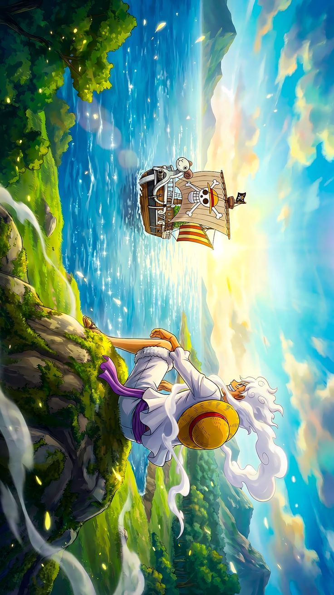
One Piece
Shounen / Aventura
Monkey D. Luffy navega pelo Grand Line com sua tripulação em busca do lendário tesouro deixado pelo Rei dos Piratas.
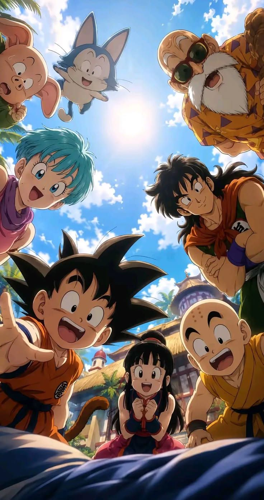
Dragon Ball
Shounen / Ação
Goku, um guerreiro Saiyajin, protege a Terra enfrentando inimigos cada vez mais poderosos em batalhas que definiram o gênero.
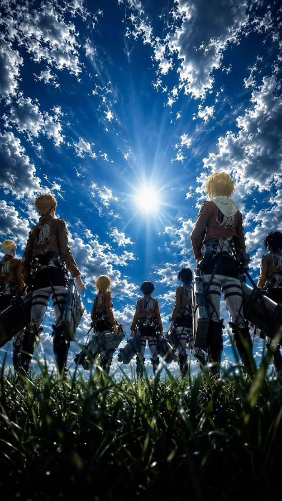
Attack on Titan
Seinen / Dark Fantasy
A humanidade luta pela sobrevivência dentro de muralhas gigantescas contra titãs devoradores de pessoas.
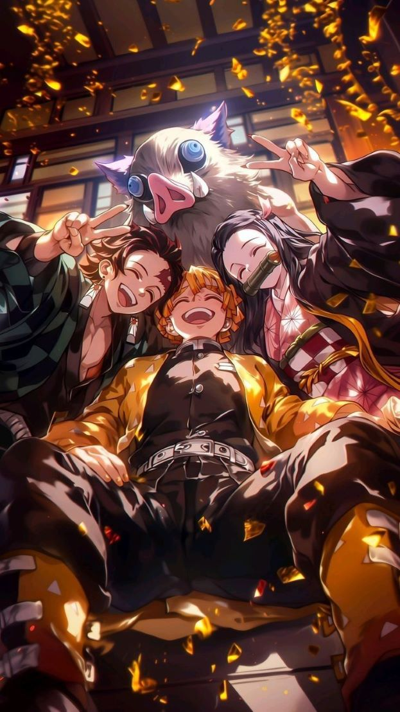
Demon Slayer
Shounen / Ação
Tanjiro se torna caçador de demônios para salvar sua irmã transformada e vingar sua família assassinada.
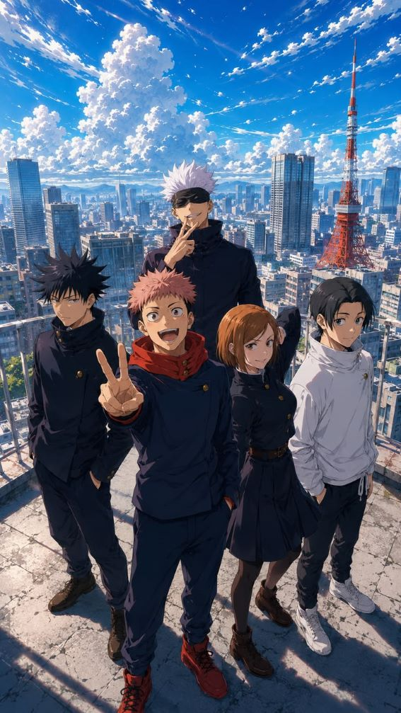
Jujutsu Kaisen
Shounen / Sobrenatural
Yuji Itadori se une a feiticeiros que enfrentam maldições em um mundo oculto repleto de energia amaldiçoada.
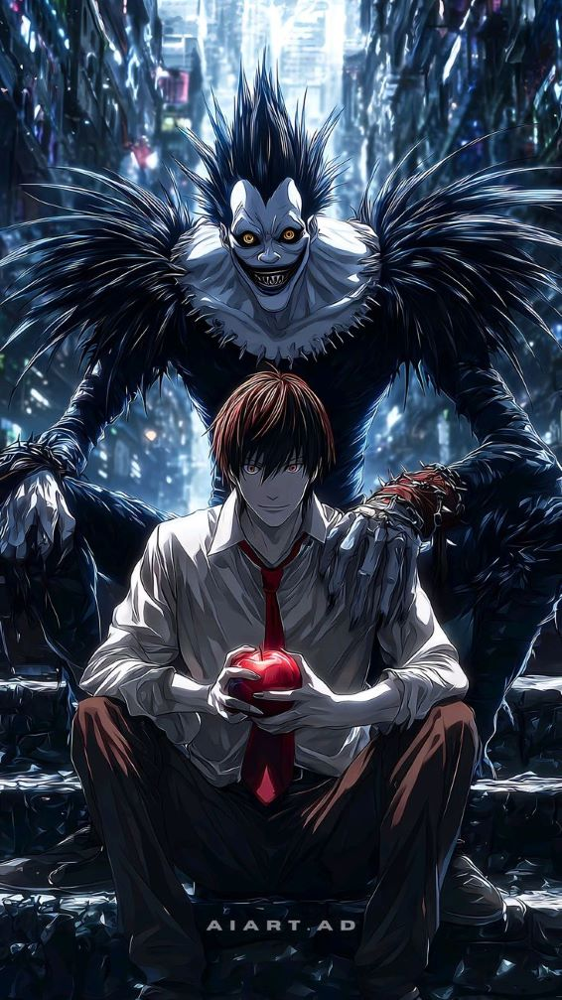
Death Note
Seinen / Thriller
Um estudante brilhante encontra um caderno sobrenatural capaz de matar qualquer pessoa cujo nome seja escrito nele.
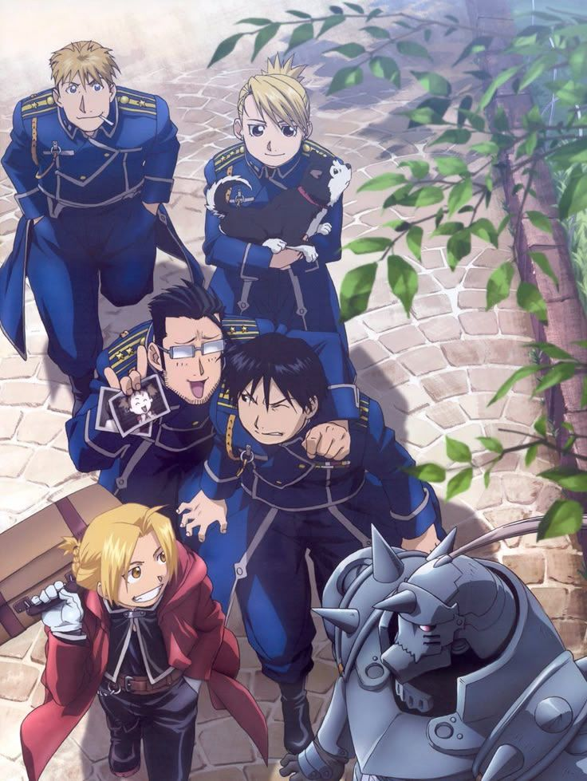
Fullmetal Alchemist: Brotherhood
Shounen / Aventura
Dois irmãos alquimistas buscam a Pedra Filosofal para restaurar seus corpos após um experimento proibido.
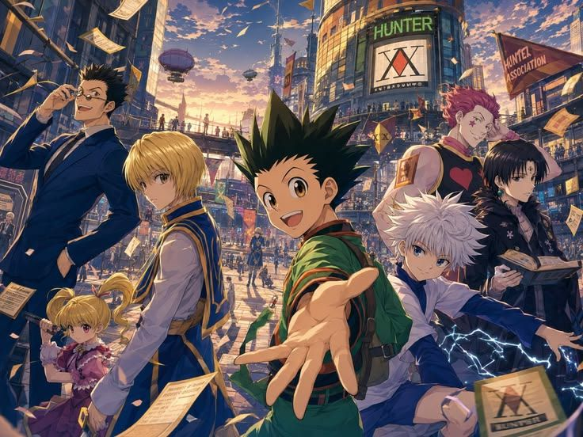
Hunter x Hunter
Shounen / Aventura
Gon Freecss parte em busca do pai desaparecido e se torna um Hunter, enfrentando desafios extraordinários.
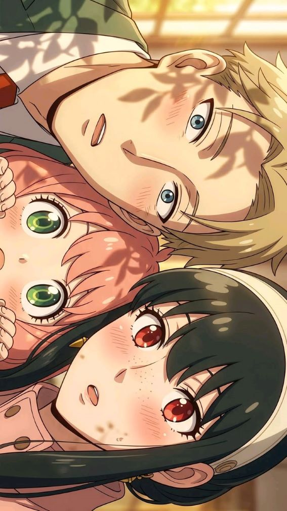
Spy x Family
Ação / Comédia
Um espião, uma assassina e uma criança telepata formam uma família falsa para preservar a paz entre duas nações.
Bastidores
Curiosidades da indústria
Fatos que revelam a dimensão criativa, cultural e econômica por trás da produção de animes.
Estúdios lendários
Studio Ghibli, Madhouse, MAPPA, Bones, Kyoto Animation, Toei e Ufotable são alguns dos estúdios que definem o padrão técnico e artístico da indústria mundial.
Do mangá à tela
A maior parte dos animes é adaptada de mangás. Editoras como Shueisha e Kodansha publicam semanalmente milhares de páginas que abastecem toda a indústria.
Seiyuu, uma profissão
No Japão, dubladores (seiyuu) são celebridades. Muitos possuem fã-clubes, discos musicais e turnês, tornando-se parte essencial da identidade das obras.
Animação híbrida
Estúdios modernos combinam desenho tradicional 2D com CGI e efeitos digitais para criar cenas de ação impossíveis de reproduzir apenas à mão.
Exportação cultural
O anime move bilhões de dólares por ano e é uma das principais formas de soft power do Japão, influenciando moda, música e cinema no mundo todo.
Openings icônicos
As aberturas — os famosos openings — se tornaram obras à parte, com bandas como LiSA, YOASOBI e RADWIMPS entrando nas paradas globais.
Cronologia
Linha do tempo
Da primeira animação japonesa aos blockbusters globais: os momentos que definiram a evolução do anime.
-
1917
Surgem os primeiros curtas de animação japonesa, considerados o marco inicial do que viria a se chamar anime.
-
1963
Osamu Tezuka lança Astro Boy, o primeiro anime televisivo de sucesso, definindo o estilo estético do meio.
-
1979
Estreia de Mobile Suit Gundam, que consolida o gênero mecha e amplia o público adulto.
-
1988
O filme Akira revoluciona a animação mundial com qualidade técnica sem precedentes.
-
1995
Neon Genesis Evangelion redefine narrativa, psicologia e simbolismo dentro do anime.
-
1997
Pokémon estreia e leva o anime ao público infantil global em escala inédita.
-
2001
A Viagem de Chihiro, do Studio Ghibli, vence o Oscar de Melhor Animação.
-
2013
Attack on Titan chega ao streaming internacional e impulsiona a era do consumo global.
-
2020
Demon Slayer: Mugen Train se torna a maior bilheteria da história do cinema japonês.
-
2024+
Plataformas como Crunchyroll e Netflix consolidam o anime como fenômeno mainstream mundial.
Inspiração visual
Galeria
Cenários e ilustrações que capturam a essência estética do universo anime.
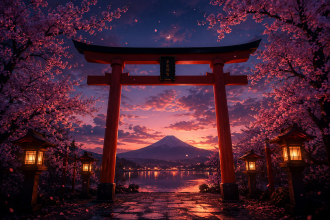
Torii ao anoitecer entre cerejeiras — símbolo recorrente da estética japonesa nos animes
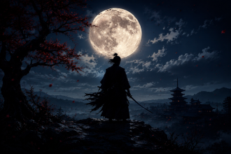
Silhueta samurai sob a lua cheia, referência clássica dos jidaigeki animados.
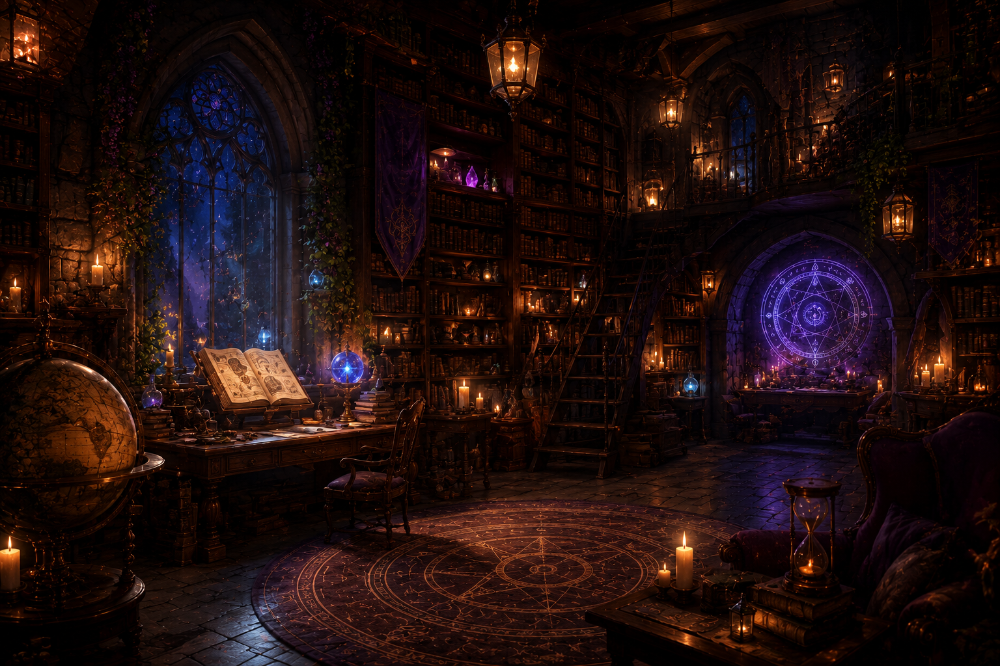
Salas de magia e bibliotecas encantadas — ambientes típicos de fantasias e isekais.
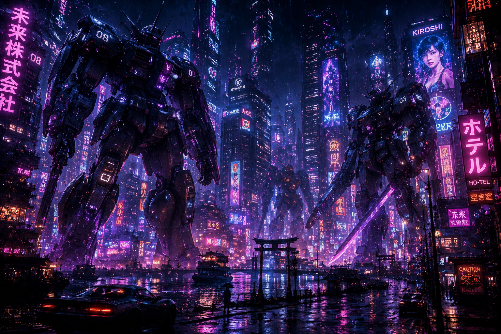
Mechas gigantes em cidades neon, marca registrada da ficção científica japonesa.
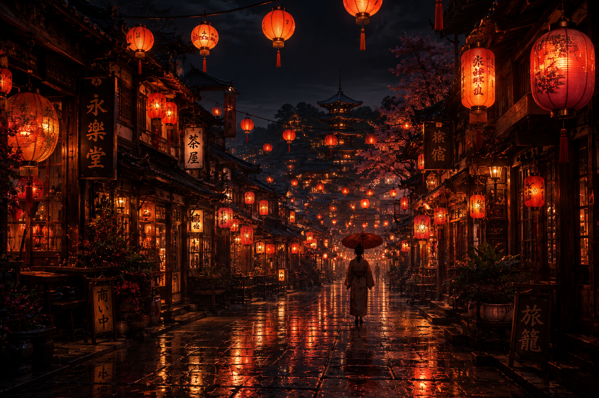
Ruas iluminadas por lanternas, cenário comum em slice of life e romances urbanos.
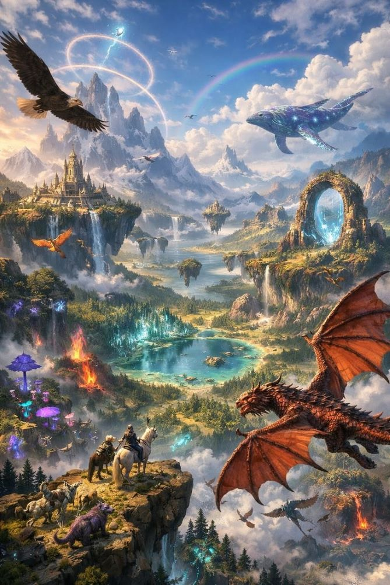
Dragões e mundos flutuantes: paisagens épicas das grandes fantasias animadas.
Dúvidas frequentes
Perguntas & respostas
Tudo o que curiosos e novos fãs costumam querer saber sobre o universo dos animes.
Qual a diferença entre anime e mangá?
Mangá é a história em quadrinhos impressa, geralmente em preto e branco. Anime é a adaptação animada em vídeo. Muitos animes têm origem em mangás, mas também existem obras originais criadas diretamente para animação.
Como começar a assistir animes?
O ideal é escolher um gênero que combine com o que você já gosta. Fãs de ação podem começar com Demon Slayer ou Fullmetal Alchemist: Brotherhood, enquanto quem prefere histórias leves pode tentar Spy x Family ou K-On!.
Onde os animes são produzidos?
Praticamente todos são produzidos no Japão, em estúdios especializados. Tóquio concentra a maior parte da indústria, com centenas de estúdios de diferentes tamanhos.
Preciso assistir dublado ou legendado?
É uma escolha pessoal. O áudio original em japonês preserva a intenção dos seiyuu, enquanto a dublagem torna o consumo mais confortável. Ambos são válidos e amplamente disponíveis.
Anime é só para crianças?
Não. Existem animes para todas as faixas etárias, incluindo obras adultas com temas complexos, filosóficos e até violentos, voltados para os públicos seinen e josei.
Quantos animes existem?
Estima-se que já foram produzidos mais de 15 mil títulos ao longo da história, entre séries, filmes, OVAs e especiais. A cada temporada, dezenas de novos animes estreiam.